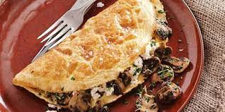

Omelette

Description
In cuisine, an omelette (also spelled omelet) is a dish made from beaten eggs, fried with butter or oil in a frying pan (without stirring as in scrambled egg). It is quite common for the omelette to be folded around fillings such as chives, vegetables, mushrooms, meat (often ham or bacon), cheese, onions or some combination of the above. Whole eggs or egg whites are often beaten with a small amount of milk, cream, or water.
Ingredients:
- Eggs
- Water
- Salt and Pepper
Steps:
- Whisk eggs, water, salt and pepper.
- Spray 8-inch (20 cm) non-stick skillet with cooking spray. Heat over medium heat. Pour in egg mixture. As eggs set around edge of skillet, with spatula, gently push cooked portions toward centre of skillet. Tilt and rotate skillet to allow uncooked egg to flow into empty spaces.
- When eggs are almost set on surface but still look moist, cover half of omelette with filling. Slip spatula under unfilled side; fold over onto filled half.
- Cook for a minute, then slide omelette onto plate.
- (Nutrients per serving as per without filling)
Index page